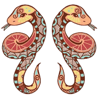

Натальная карта Lite
Выберите знак зодиака

Овен
21.03 - 19.04
Телец
20.04 - 20.05

Близнецы
21.05 - 21.06

Рак
22.06 - 22.07
Лев
23.06 - 22.08

Дева
23.08 - 22.09
Весы
23.09 - 23.10
Скорпион
24.10 - 22.11
Стрелец
23.11 - 21.12

Козерог
22.12 - 20.01
Водолей
21.01 - 18.02

Рыбы
19.02 - 20.03
Выбрать другой знак зодиака